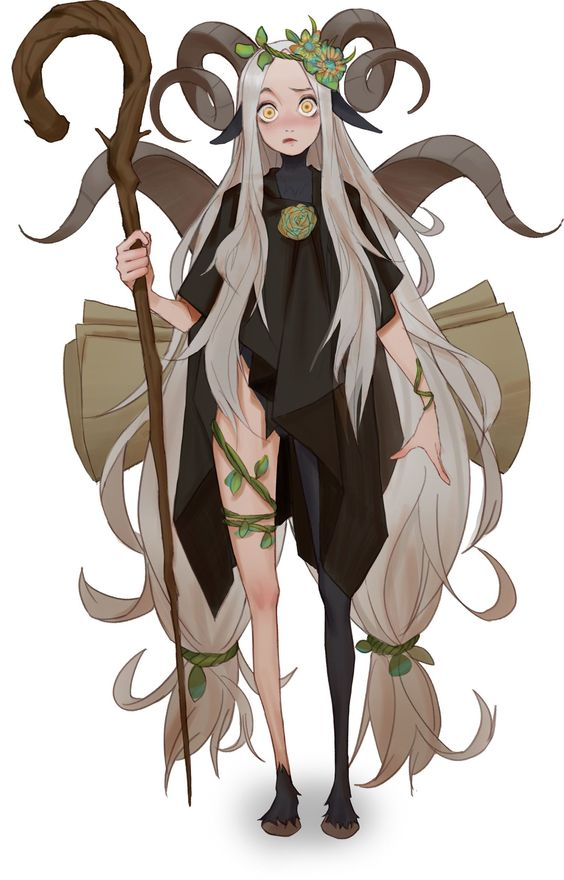
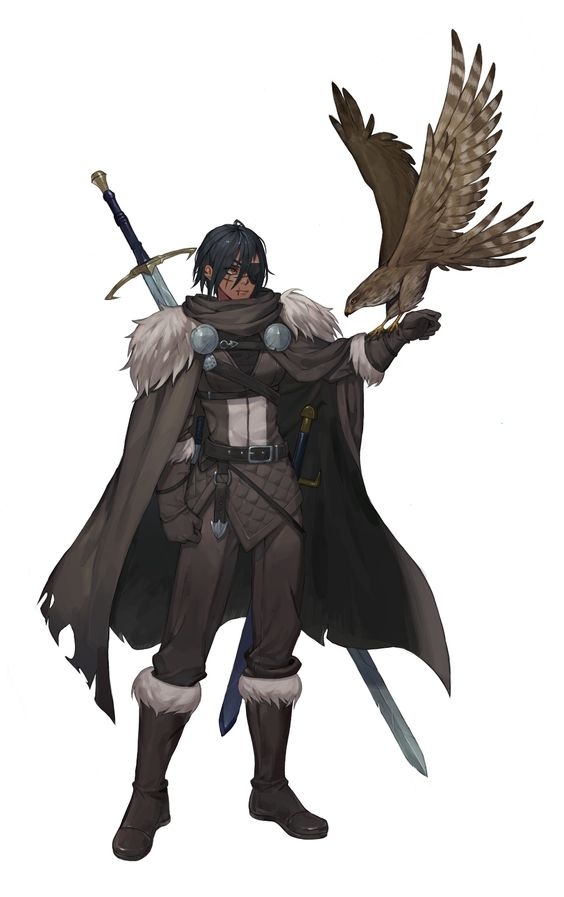

The fantasia explorers was inspired by playing other adventure games.I love going on adventures and I hope you gamers have lots of fun playng.
This are some of the other things I have worked on.
github gomycodeCodes used for the creation of the game website
The app is based on:
Everyhting to know about muix.
Muix is a fairy human frog. Muix embarked a journey to learn about the valley and during her adventure she came across another adventurer and they both had the same goals so they became adventurer buddies
Muix has some powers that will help through the journey.She has not fully discovered her powers so as the journey goes on you help her overcome this and she will be able to use her powers to her full pontential
Muix looks like this:

There are two characters to pick from in this game they have different abilities but same motives.
Aries is one of the characters who embarked on a journey and met Muix.
Aries is a half witch half golger.She has mastered the witch spels from her mom since her childhood and after her mom's passing she wanted to complete her mom's project so she embarked on a journey to the fantasia valley and there she met Muix.
She doesnt know much about the project but as her journey continues she finds more about it and she discovered new powers and will earn how to use them as she discovers more of her mom's project.
Aries looks like this:
Aruy is one of the other two characters who embarked on a journey and met Muix.
Aruy is a sword fighter.He has mastered the sword arts and is able to move as fast as a hawk and He looks intimidating and scary.Aruy is trying to discover more about his hometown,Fantasia Valley, he loves spending time in the woods and care for his sick mom but after his moms death he begins his journey.
Aruy later finds Muix and they became closer and go on their journey together
Aruy looks like this:
